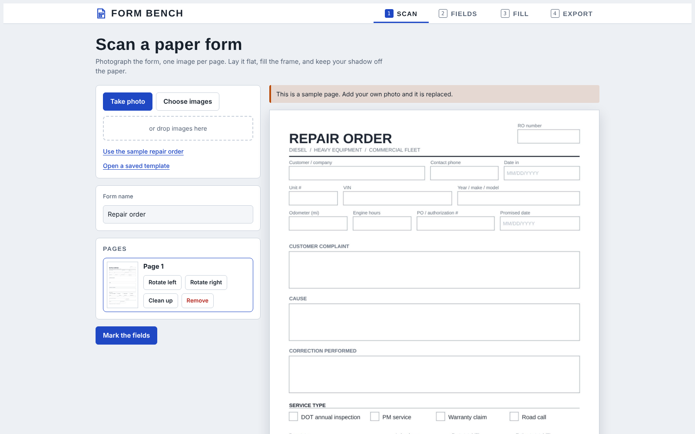
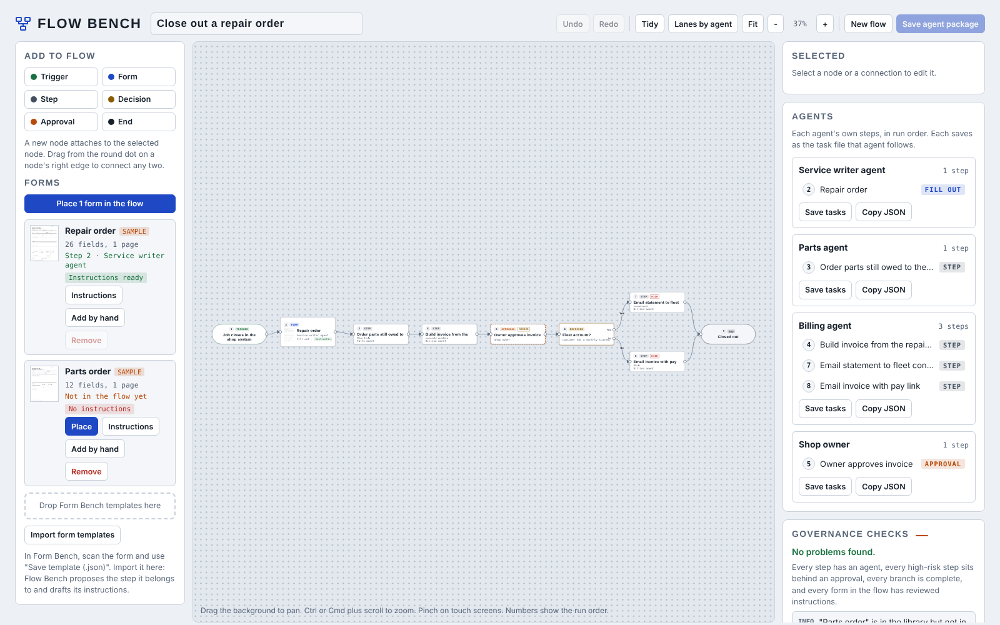

Build your own AI agent. It stays inside your rules.
An AI agent is software that does a job for you, like answering booking requests or filling in repair orders. Build-A-Bot lets you make one from ready-made parts, without writing code. It checks with you before anything important and keeps a record of everything it does.
Five steps from an idea to an agent at work.
No programming. You choose from parts that are already built and tested.
- 01Pick a jobBooking clerk, service writer, office clerk
- 02Add skills and toolsReady-made and already tested
- 03Add your paperworkPhotograph your own forms
- 04Set its limitsWhat it may do without asking
- 05Put it to workYou approve what matters
Turn your paper forms into ones your agent can fill in.
- 01Photograph the form
- 02Mark the boxes
- 03Get a fillable form

Map out the job step by step, and check it before it runs.

Most agent builders let you build anything. Ours keeps every agent inside its limits.
A typical agent builder
- Acts as soon as the AI decides
- Reads whatever it can reach
- Guesses when unsure
- Keeps logs only if you set them up
- Runs on the vendor's servers
Build-A-Bot
- Acts within your rules, or asks
- Reads only what you allow
- Asks a person
- no answer means no
- A record of every step, where any change shows
- Runs on your own computer
Hire agents the way you hire people.
Every agent starts from a job description, like a new employee, written from at least three real job postings for the same work. More about n-HR™, our way of managing agents like staff.
- 01Job descriptionFrom 3+ real postings
- 02RoleIts duties, nothing else
- 03SkillsHow it does the work
- 04ToolsWhat it may use, and its limits
The building blocks already work.
- Form Bench and Flow Bench run today. The pictures above are real screenshots, not mockups.
- Form & Flow, the Android app that holds both, is built and installable (version 2.0.0).
- Next: a step-by-step builder anyone can use.
Be one of the first to build a bot.
Early access opens with the step-by-step builder. Plans start at $20 a month.
Other products
n-HR™
Manage AI agents the way HR manages staff
City SeCUReD
Disaster drills on a copy of your city
Position Agents
AI helpers for a city's emergency center
Desk Agents
Email and paperwork help for small business
The Engine
The safety system under every product
Verifiable Inference
Prove an AI answer hasn't changed
G-ynthetic Mind
A personal AI that remembers you
CubeX
Chess played inside a cube